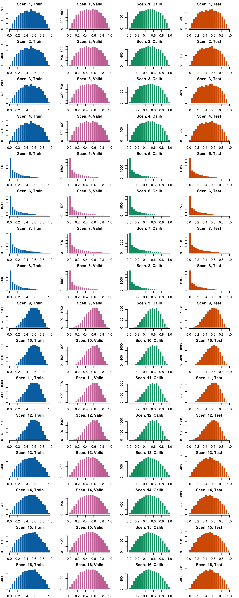
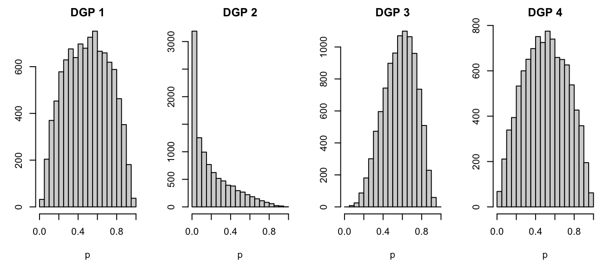

We follow Ojeda et al. (2023) to generate data. They kindly provide two functions to simulate binary in the supplementary materials of their article. We adapt their codes to generate the first 12 scenarios from their article.
We add another type of scenarios to generate the data, so that the predictor is no longer linear.
Code Availability
The functions used to generate data are saved in ../scripts/functions/simul-data.R. They will be used in other chapters.
library(tidyverse)
── Attaching core tidyverse packages ──────────────────────── tidyverse 2.0.0 ──
✔ dplyr 1.1.4 ✔ readr 2.1.5
✔ forcats 1.0.0 ✔ stringr 1.5.1
✔ ggplot2 3.5.1 ✔ tibble 3.2.1
✔ lubridate 1.9.3 ✔ tidyr 1.3.1
✔ purrr 1.0.2
── Conflicts ────────────────────────────────────────── tidyverse_conflicts() ──
✖ dplyr::filter() masks stats::filter()
✖ dplyr::lag() masks stats::lag()
ℹ Use the conflicted package (<http://conflicted.r-lib.org/>) to force all conflicts to become errors
The simulate_data() function generates data for one of the 12 first scenarios described in the article or one of our additional 4 scenarios. This is a helper function that is called in the second one, simulate_data_wrapper() which generates datasets.
Code
#' Simulates train/validation/calibration/test#'#' @details#' This function is a modified version of the function 'simulateData' in the#' R script 'functions-for-calibrating-random-forests.R' provided in the#' supplementary material of Dankowski, T., & Ziegler, A. (2016). Calibrating#' random forests for probability estimation. Statistics in medicine, 35(22),#' 3949-3960.#'#' @param n_num number of numerical covariates#' @param add_categ if `TRUE`, add 5 categorical variables#' @param coeff vector of coefficients (of length n_num + 5)#' @param n_noise number of noise variables (drawn from N(0,1))#' @param mean_num vector of mean for the numerical variables#' @param sd_num vector of standard deviations for the numerical variables#' @param size_train size for the train set#' @param size_valid size for the validation set#' @param size_calib size for the calibration set#' @param size_test size for the test set#' @param transform_probs if `TRUE`, the true probability is taken to the power of 3#' @param linear_predictor if `TRUE`, the predictor of the true probability is a#' linear combination of the covariates. Otherwise, the squared term for x1 is#' added, as well as an interaction term between x2 and x3 (`n_num` thus need#' to be at least 3).#' @param seed desired seed (default to `NULL`)#' @param linear_predictor_factor if `transform_probs = TRUE`, scalar used to#' draw more observation before subsampling. Default to 3 (a sample 3 times#' larger than `the size of the samples will first be generated before#' subsampling so that the true probability follows a Beta(2,2).#'#' @returns A list with the following components:#' - train: train set#' - valid: validation set#' - calib: calibration set#' - test: test set#' - probs_train: true probabilities for binary event in train set#' - probs_valid: true probabilities for binary event in validation set#' - probs_calib: true probabilities for binary event in calibration set #' - probs_test: true probabilities for binary event in test setsimulate_data <-function(n_num =2,add_categ =FALSE, coeff,n_noise =0, mean_num, sd_num, size_train, size_valid, size_calib, size_test,transform_probs =FALSE,linear_predictor =TRUE,linear_predictor_factor =3,seed =NULL) { n_obs <- size_train + size_valid + size_calib + size_testif (linear_predictor ==FALSE) { n_obs <- n_obs * linear_predictor_factor }if (!is.null(seed)) {set.seed(seed) }# Numerical covariates covariates <-map2(.x = mean_num,.y = sd_num,.f =~rnorm(n = n_obs, mean = .x, sd = .y) )names(covariates) <-str_c("x", 1:n_num) covariates <-as_tibble(covariates)# Categorical covariatesif (add_categ ==TRUE) { x_c1 <- base::sample(c(0, 1), n_obs, replace =TRUE) x_c2 <- base::sample(c(0, 1), n_obs, replace =TRUE) x_c3 <- base::sample(c(1, 2, 3), n_obs, replace =TRUE) x_c4 <- base::sample(c(1, 2, 3, 4), n_obs, replace =TRUE) x_c5 <- base::sample(c(1, 2, 3, 4, 5), n_obs, replace =TRUE) categ_covariates <-tibble(x_c1, x_c2, x_c3, x_c4, x_c5)colnames(categ_covariates) <-str_c("x", (n_num +1):(n_num +5)) covariates <-bind_cols(covariates, categ_covariates) }if (linear_predictor ==TRUE) {# Linear predictor eta <-as.matrix(covariates) %*% coeff } else {if (n_num <3) stop("If linear_predictor=TRUE, n_num must be greater than 2") eta <-as.matrix(covariates) %*% coeff + covariates$x1^2+ covariates$x2^2* covariates$x3 }# True probability true_prob <-as.numeric(1/ (1+exp(-eta)))if (transform_probs) true_prob <- true_prob^3# Observed event y <-rbinom(n_obs, size =1, prob = true_prob)# Create dataset with observed event and covariates tb <-tibble(y, covariates)if (linear_predictor ==FALSE) {# We would like the probabilities to be distributed as a Beta(2,2) tb <- tb |>mutate(p = true_prob) tb <-subset_target(data = tb,probs_name ="p",target_fun =function(x) dbeta(x,2,2),iter =1, draw =FALSE,seed = seed,verbose =FALSE ) n_obs <- size_train + size_calib + size_valid + size_testif (nrow(tb) < n_obs) {stop(str_c("The number of observation generated is lower than the ","desired number. Increase `linear_predictor_factor`.") ) } true_prob <- tb$p[1:n_obs] tb <- tb |>select(-p) |> dplyr::slice_head(n = n_obs) }# Noise variablesif (n_noise >0) { noise <-matrix(rnorm(n_noise * n_obs, mean =0, sd =1),ncol = n_noise,nrow = n_obs,byrow =FALSE ) |>as_tibble()colnames(noise) <-str_c("noise_", 1:n_noise) tb <-bind_cols(tb, noise) }# Split data into train/calib/valid/test tb_train <- tb |> dplyr::slice(1:size_train) true_prob_train <- true_prob[1:size_train]# Validation ind_valid <- (size_train +1):(size_train + size_valid) tb_valid <- tb |> dplyr::slice(ind_valid) true_prob_valid <- true_prob[ind_valid]# Calibration ind_calib <- (size_train + size_valid +1):(size_train + size_valid + size_calib) tb_calib <- tb |> dplyr::slice(ind_calib) true_prob_calib <- true_prob[ind_calib]# Test ind_test <- (size_train + size_valid + size_calib +1):n_obs tb_test <- tb |> dplyr::slice(ind_test) true_prob_test <- true_prob[ind_test]list(train = tb_train,valid = tb_valid,calib = tb_calib,test = tb_test,probs_train = true_prob_train,probs_valid = true_prob_valid,probs_calib = true_prob_calib,probs_test = true_prob_test )}
The simulate_data_wrapper() is the one we call to generate a dataset, given a scenario and a seed.
Code
#' Generates data for a given simulation scenario.#'#' @details#' Wrapper of 'simulate_data' function that generates the data for a given#' simulation scenario.#'#' @param scenario simulation scenario number.#' @param params_df data frame containing the parameters to be passed to the#' `simulate_data` for each simulation scenario.#' @param repn Number of current replication to be generated for the given#' simulation scenario.#'#' @returns A list with the following components:#' - scenario: the scenario ID#' - params_df: the parameters used for the data generation for the given#' scenario.#' - repn: Number of current replication that was generated for the given#' simulation scenario.#' - data: list with the simulated data (train, valid, test, probs_train,#' probs_valid and probs_test)#' see result of `simulate_data()`.simulate_data_wrapper <-function(scenario, params_df, repn) { params <- params_df[params_df[["scenario"]] == scenario, ]if(nrow(params) !=1) stop("More than one row from params_df chosen") seed_for_repn <-pull(params, "seed") + repn args <-list(coeff = params |>pull("coefficients") |>pluck(1),n_num = params |>pull("n_num"),add_categ = params |>pull("add_categ"),n_noise = params |>pull("n_noise"),mean_num = params |>pull("mean_num") |>pluck(1),sd_num = params |>pull("sd_num") |>pluck(1),size_train = params |>pull("size_train"),size_valid = params |>pull("size_valid"),size_calib = params |>pull("size_calib"),size_test = params |>pull("size_test"),transform_probs = params |>pull("transform_probs"),linear_predictor = params |>pull("linear_predictor"),seed = seed_for_repn ) sim_data <-do.call("simulate_data", args)list(scenario = scenario,params_df = params,repn = repn,data = sim_data )}
4.2 Scenarios
Let us define the 12 first scenarios, using the code provided in Ojeda et al. (2023).
DGP 1:
Scenario 1: basic scenario with two continuous predictors, without noise variable
Scenarios 2, 3, 4: same as 1 but with noise variables (10, 50, 100)
DGP 2:
Scenarios 5 to 8: similar to 1 to 4 but with right-skewed true probability distribution (true probability taken to the power of 3)
DGP 3:
Scenarios 9 to 12: similar to 1 to 4 but with ten predictors instead of two (5 numerical and 5 categorical)
We add four other scenarios, in which the predictor is nonlinear:
DGP 4:
Scenarios 13 to 16: similar to 1 to 4 but with 3 covariates instead of 2 and with a nonlinear predictor which also contains an interaction term (\(\eta = \alpha _1x_1 + \alpha_2 x_2 + \alpha_3 x_3 + \beta x_1^2 + \gamma x_2 \times x_3\)). In addition, the distribution of the true probabilities of the observed data follows a Beta(2,2) distribution.
The desired number of replications for each scenario needs to be set:
repns_vector <-1:100
We set the different parameters for each scenario.
# Coefficients betacoefficients <-list(# First category (baseline, 2 covariates)c(0.5, 1), # scenario 1, 0 noise variablec(0.5, 1), # scenario 2, 10 noise variablesc(0.5, 1), # scenario 3, 50 noise variablesc(0.5, 1), # scenario 4, 100 noise variables# Second category (same as baseline, with lower number of 1s)c(0.5, 1), # scenario 5, 0 noise variablec(0.5, 1), # scenario 6, 10 noise variablesc(0.5, 1), # scenario 7, 50 noise variablesc(0.5, 1), # scenario 8, 100 noise variables# Third category (same as baseline but with 5 num. and 5 categ. covariates)c(0.1, 0.2, 0.3, 0.4, 0.5, 0.01, 0.02, 0.03, 0.04, 0.05),c(0.1, 0.2, 0.3, 0.4, 0.5, 0.01, 0.02, 0.03, 0.04, 0.05),c(0.1, 0.2, 0.3, 0.4, 0.5, 0.01, 0.02, 0.03, 0.04, 0.05),c(0.1, 0.2, 0.3, 0.4, 0.5, 0.01, 0.02, 0.03, 0.04, 0.05),# Fourth category (nonlinear predictor, 3 covariates)c(0.5, 1, .3), # scenario 5, 0 noise variablec(0.5, 1, .3), # scenario 6, 10 noise variablesc(0.5, 1, .3), # scenario 7, 50 noise variablesc(0.5, 1, .3) # scenario 8, 100 noise variables)# Mean parameter for the normal distribution to draw from to draw num covariatesmean_num <-list(# First category (baseline, 2 covariates)rep(0, 2), # scenario 1, 0 noise variablerep(0, 2), # scenario 2, 10 noise variablesrep(0, 2), # scenario 3, 50 noise variablesrep(0, 2), # scenario 4, 100 noise variables# Second category (same as baseline, with lower number of 1s)rep(0, 2), # scenario 5, 0 noise variablerep(0, 2), # scenario 6, 10 noise variablesrep(0, 2), # scenario 7, 50 noise variablesrep(0, 2), # scenario 8, 100 noise variables# Third category (same as baseline but with 5 num. and 5 categ. covariates)rep(0, 5),rep(0, 5),rep(0, 5),rep(0, 5),# Fourth category (nonlinear predictor, 3 covariates)rep(0, 3),rep(0, 3),rep(0, 3),rep(0, 3))# Sd parameter for the normal distribution to draw from to draw num covariatessd_num <-list(# First category (baseline, 2 covariates)rep(1, 2), # scenario 1, 0 noise variablerep(1, 2), # scenario 2, 10 noise variablesrep(1, 2), # scenario 3, 50 noise variablesrep(1, 2), # scenario 4, 100 noise variables# Second category (same as baseline, with lower number of 1s)rep(1, 2), # scenario 5, 0 noise variablerep(1, 2), # scenario 6, 10 noise variablesrep(1, 2), # scenario 7, 50 noise variablesrep(1, 2), # scenario 8, 100 noise variables# Third category (same as baseline but with 5 num. and 5 categ. covariates)rep(1, 5),rep(1, 5),rep(1, 5),rep(1, 5),# Fourth category (nonlinear predictor, 3 covariates)rep(1, 3),rep(1, 3),rep(1, 3),rep(1, 3))params_df <-tibble(scenario =1:16,coefficients = coefficients,n_num =c(rep(2, 8), rep(5, 4), rep(3, 4)),add_categ =c(rep(FALSE, 8), rep(TRUE, 4), rep(FALSE, 4)),n_noise =rep(c(0, 10, 50, 100), 4),mean_num = mean_num,sd_num = sd_num,size_train =rep(10000, 16),size_valid =rep(10000, 16),size_calib =rep(10000, 16),size_test =rep(10000, 16),transform_probs =c(rep(FALSE, 4), rep(TRUE, 4), rep(FALSE, 4), rep(FALSE, 4)),linear_predictor =c(rep(TRUE, 12), rep(FALSE, 4)),seed =202105)rm(coefficients, mean_num, sd_num)
4.3 Example
Let us draw a sample of 10,000 observations in each set (train, calibration, validation, test), for each scenario. We can then plot the histogram of the true probabilities in each sample (Figure 4.1).
Figure 4.1: Histogram of true probabilities for each scenario

For each group of scenarios, the only thing that varies is the number of noise variables. This has no impact on the distribution of the true probability. Hence, we can create a simple figure with the distribution of the true probability for each group of scenario.
Only on Train test, for each category of scenarios.
save_graph <-FALSEif (save_graph) {cairo_pdf("../figs/sim-data-hist-categories.pdf", width =8, height =2 )}par(mfrow =c(1, 4), mar =c(4.1, 3.1, 2.1, 1.1))for (i_dgp in1:4) { scenario <-c(1, 5, 9, 13)[i_dgp] simu_data <-simulate_data_wrapper(scenario = scenario,params_df = params_df,repn = repns_vector[1] # only one replication here ) true_prob <- simu_data$data$probs_test title <-str_c("DGP ", i_dgp)hist( true_prob,breaks =seq(0, 1, by = .05),# col = ,# border = "white",xlab ="p", ylab ="",main = title,xlim =c(0, 1) )}
Warning in ks.test.default(probs_01, fun): ties should not be present for the
one-sample Kolmogorov-Smirnov test
Only on Train test, for each category of scenarios.
if (save_graph) dev.off()
Figure 4.2: Distribution of the underlying probabilities in the different categories of scenarios.

Ojeda, Francisco M., Max L. Jansen, Alexandre Thiéry, Stefan Blankenberg, Christian Weimar, Matthias Schmid, and Andreas Ziegler. 2023. “Calibrating Machine Learning Approaches for Probability Estimation: A Comprehensive Comparison.”Statistics in Medicine 42 (29): 5451–78. https://doi.org/10.1002/sim.9921.